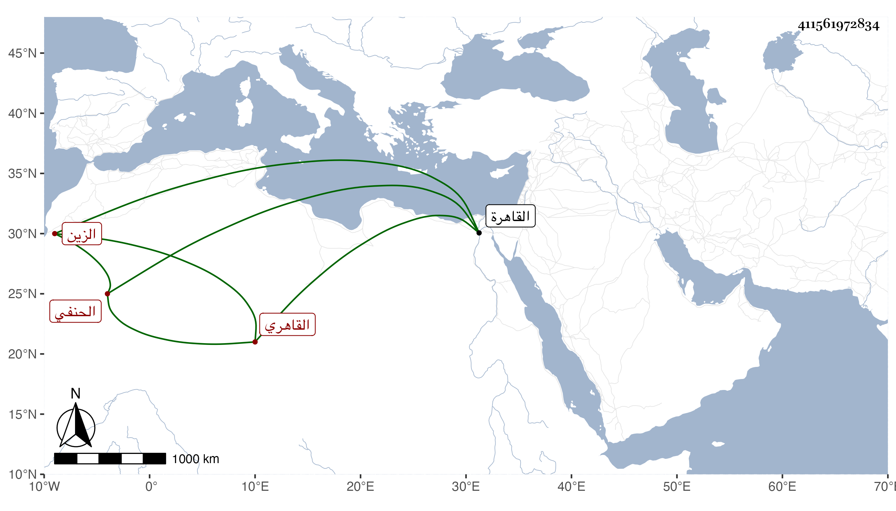

0902Sakhawi.DawLamic.ITO20230111-ara1.EIS1600.411561972834
Biography ID: 411561972834
215
أبو بكر بن محمد بن عبد الله بن مقبل الزين القاهري الحنفي ويعرف بالتاجر . كان في أوله سمسارا بقيسارية الشرب فانكسر عليه مال كثير فترك صناعته واشتغل بالعلم فتنبه وفضل فاستنابه الجمال التركماني بعناية المحب ناظر الجيش ثم لم يزل ينوب حتى مات في ثالث ذي الحجة سنة خمس عن نحو الثمانين وكان مشهورا بالديانة غير متقيد بزينة الدنيا مطرحا للتكلف في ملبسه وهيئته مع المهابة وقلة الكلام . ذكره شيخنا في إنبائه وقال البرهان الحلبي أنه أخبره أنه قرأ صحيح البخاري إلى سنة ثمانين خمسا وتسعين مرة وقرأه بعد ذلك مرارا كثيرة وقال المقريزي في عقوده أبو بكر بن عبد الله الشيخ زين الدين التاجر كان سمسارا في البز وله معرفة بالفقه والعربية ثم ترك السمسرة وأقبل بكليته على العلم حتى صار من شيوخ البلاد وأفتى ودرس وناب في الحكم بالقاهرة عدة سنين حتى مات وكان طارحا للتكلف في ملبسه وهيئته يمشي على قدميه في الأسواق مهابا قليل الكلام موصوفا بالخير لزمته سنين وكنت في صغري وبداية طلبي إذا أردت أن أتكلم في درسه يأخذني الحياء فأسكت وكان درسه بالظاهرية القديمة يحضره جمع كثير فقال لي تكلم من لا يخبط ما يعرف يعوم يريد أن أجسر على الكلام مع الطلبة في حلقته رحمه الله وإيانا .
